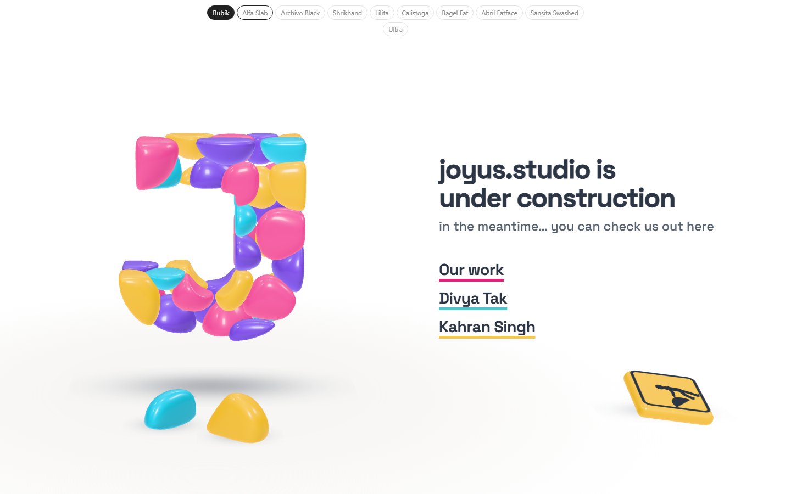
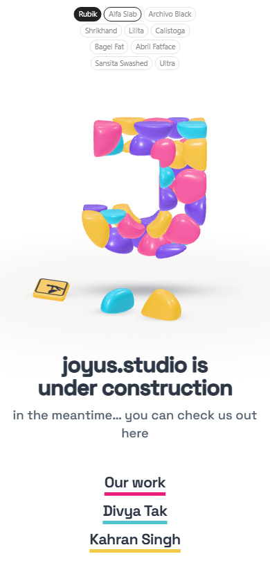
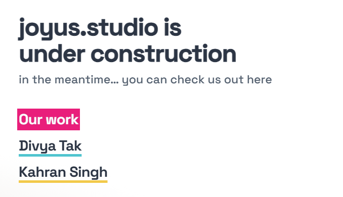
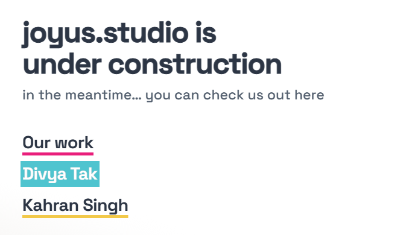

Study 40 · 13 October 2026
Six small things
The fonts alternate sans and not-sans, round the wrap. The sign further right. The hovered word goes white as the band passes (ink on the yellow one). More air before the links. A heavier headline. "Our work" opens the Drive deck.
Open the page (hover the links)

The sweep


The order
Rubik · Alfa Slab · Archivo Black · Shrikhand · Lilita · Calistoga · Bagel Fat · Abril Fatface · Sansita Swashed · Ultra, and back to Rubik. Sans (Rubik, Archivo Black, Lilita, Bagel Fat, Sansita) and not-sans alternate all the way round.
The headline's weight
Space Grotesk's heaviest cut is 700, which it already wore. The headline now also carries a 0.9px stroke in the ink, painted under the fill, which reads as a heavier weight without a new font.
Open
- Is the stroke heavy enough, or would you rather a heavier font for the headline?
Pictures: shoot.mjs. Test: page-test.mjs, 55 checks in a browser; read by check.cjs.